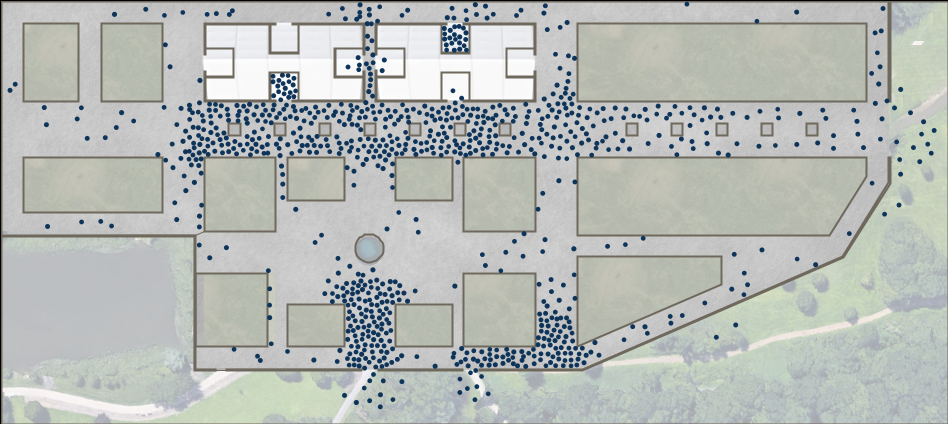
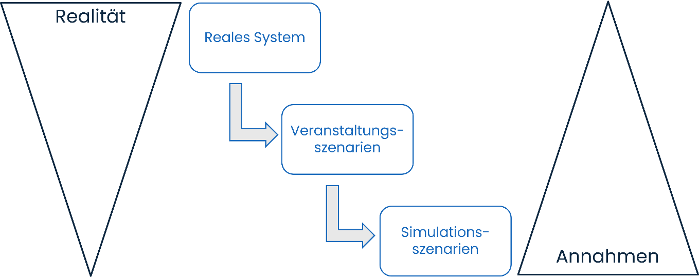
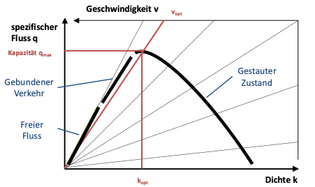
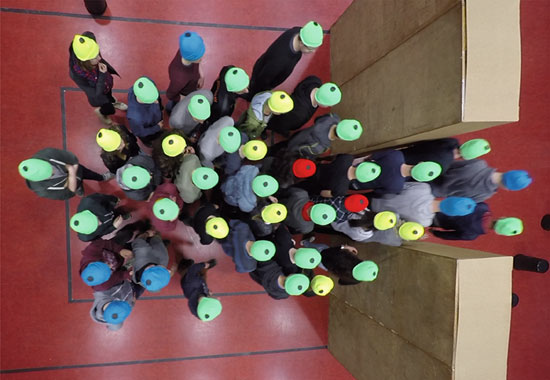
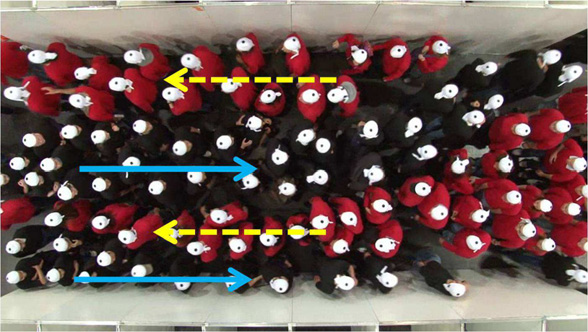

Ziel dieses Dokuments ist es, ein Grundverständnis für Simulationen zu vermitteln, damit das SCENIC-Verfahren zielgerichtet eingesetzt werden kann. Im Folgenden wird erläutert, was eine Simulation ist und welche Eingabewerte zur Konfiguration einer Simulation bekannt sein müssen. Es werden Möglichkeiten und Grenzen von Simulationen diskutiert und beispielhaft aufgezeigt, bei welchen Fragestellungen Simulationen hilfreich sein können und bei welchen nicht.
Personenstromsimulationen sind eine geeignete Methode, um die Bewegung von Menschen in einer definierten räumlichen Umgebung zu analysieren, unter anderem im Kontext des Brandschutzes und der Veranstaltungsplanung. Sie können dazu eingesetzt werden, Schutzziele zu überprüfen z. B. über Leistungskriterien, wie in der DIN18009-2 [1] im Rahmen des Brandschutzingenieurwesen beschrieben, oder Abläufe zu testen wie bspw. bei Ein- und Auslasssituationen. Sie bieten die Möglichkeit, planerisch verschiedene Szenarien zu testen und besser zu verstehen, wie sich die Dynamik von Menschenmengen, also von Personenströmen, unter bestimmten Bedingungen entwickeln kann. Dabei wird die Veranstaltung in einem Modell nachgebildet, um daraus Erkenntnisse zu gewinnen, die als Entscheidungsgrundlage herangezogen und in der Planung entsprechend berücksichtigt werden können. Simulationen können dabei helfen, Engstellen, Stauungen oder Zusammenhänge verschiedener Faktoren frühzeitig zu erkennen. Sie sind besonders hilfreich, wenn herkömmliche Berechnungsmethoden an ihre Grenzen stoßen, etwa bei sich kreuzenden Personenströmen, dynamischen Bedingungen wie wechselnden Wegen oder variierendem Zustrom, sowie bei heterogener Population mit unterschiedlichen freien Gehgeschwindigkeiten.
Dennoch gibt es auch Einschränkungen bei der Verwendung von Simulationen. Sie können keine Vorhersagen zur Anzahl von Besuchenden oder deren individuellen Verhalten machen. Diese Faktoren müssen von der Veranstaltungsorganisation vorab festgelegt werden. Auch sozialpsychologische Aspekte, wie aggressives oder unkooperatives Verhalten, können von Simulationen nicht berücksichtigt werden.
Diese durch Simulation nur unzureichend abbildbare Faktoren müssen bei den Auswertungen von Ergebnissen berücksichtigt und bewertet werden. Zudem hängen die Ergebnisse stark von den angenommenen Eingabedaten ab, wie etwa der Anzahl der Personen, der freien Gehgeschwindigkeit oder der Verteilung auf dem Gelände. Von der zu erwartenden Situation abweichende Eingabedaten können zu ungenauen Ergebnissen führen. Insgesamt ermöglichen Simulationen aber valide Prognosen zu erwartenden Stauungen, erfordern jedoch sorgfältige Planung und sehr genaue Eingabedaten, um realistische und nützliche Ergebnisse zu liefern.
Unter Simulation versteht man laut VDI: „Nachbildung eines dynamischen Prozesses in einem System mithilfe eines experimentierfähigen Modells, um zu Erkenntnissen zu gelangen, die auf die Wirklichkeit übertragbar sind”. [2] Das bedeutet, dass eine Simulation die für die Fragestellung relevanten Prozesse möglichst realitätsnah abbilden soll. Simulationen ersetzen nicht die Realität, sondern ermöglichen Rückschlüsse auf die Realität.
Der Einsatz von Simulationen zur Untersuchung von Personenströmen, oder kurz Personenstromsimulation, ist seit den tragischen Ereignissen bei der Loveparade in Duisburg in der Veranstaltungsplanung häufiger zu finden. Um dieses Werkzeug zweckgemäß einsetzen zu können, ist ein grundlegendes Verständnis der Funktionsweise einer Simulation von Personenströmen sowohl für die Beauftragung als auch für die Bewertung der Ergebnisse erforderlich.
Ziel des Einsatzes von Simulationen im Kontext der Veranstaltungsplanung ist die Bearbeitung spezifischer Fragestellungen rund um die Bewegung von Menschenmengen in einem definierten räumlichen Umfeld innerhalb eines bestimmten Betrachtungszeitraums. Mit den Ergebnissen von Simulationen können die im Rahmen einer Veranstaltung oder einer Versammlung genutzten Wege und Flächen auf ihre sichere Benutzbarkeit sowohl im Normal- als auch im Räumungsfall überprüft werden. Konkret können z. B. Engstellen und zeitliche Abläufe unter bestimmten Bedingungen aufgezeigt werden. Abbildung 1 zeigt ein Beispiel für die Visualisierung einer Simulation.

Mit Personenstromsimulationen wird die Dynamik von Menschenmengen abgebildet. Es wird zwischen makroskopischen und mikroskopischen Modellen unterschieden. Handrechenverfahren, wie im EVC [4] beschrieben zählen zu den makroskopischen Modellen und rechnen mit Durchschnittswerten. Mit ihnen können Zielgrößen wie Räumungszeiten oder erreichbare Personenverkehrsstärken ohne Softwareunterstützung überschlagsweise berechnet werden. Mikroskopische Modelle können nur mit Hilfe von Software angewendet werden und betrachten die Bewegung jeder einzelnen Person unter Einbeziehung der Wechselwirkung mit ihrer Umgebung. Hierzu zählen Interaktionen mit umgebenden Personen und mit der „baulichen“ Umgebung (Wände, Hindernisse, etc.).
Der Einsatz von mikroskopischen Personenstromsimulationen im Räumungskontext ist im Brandschutz ein weit verbreiteter Ansatz zur Bewertung von Flucht- und Rettungswegen. Hier existieren bereits Normen und Richtlinien wie die DIN 18009-2 oder RiMEA [5], die Hinweise zum Einsatz von Simulationen in diesem Bereich geben. Diese Hinweise können nicht 1:1 auf zu simulierende Veranstaltungsabläufe, z. B. eine Einlass- oder Auslasssituation, übertragen werden, sondern müssen für den Veranstaltungskontext erweitert und angepasst werden. Beispielsweise muss bei einer Auslasssituation im Gegensatz zur Räumungssituation eine andere Wegwahl zu verschiedenen Zielbereichen unter Berücksichtigung des Anreisemittels betrachtet werden.
Bei der Untersuchung von Veranstaltungsszenarien ist zu beachten, dass mit einer Simulation nicht die Veranstaltung oder Versammlung betrachtet werden kann, sondern immer nur eine definierte Fragestellung. Die Fragestellung bedeutet immer auch eine zeitliche und/oder räumliche Eingrenzung. Beispiele für eine solche konkrete Festlegung sind:
Um diese beispielhaften Fragestellungen mit einer Simulation beantworten zu können, müssen grundlegende Annahmen getroffen werden z. B.: Wo befinden sich die Personen zu Beginn der Simulation? Wie verteilen sich die Personen auf die Durchgänge der Vereinzelungsanlagen? Mit welcher Kontrollzeit pro Person ist hier zu rechnen? Wie und in welcher Taktung reisen die Personen an? Wie viele Personen suchen den vorderen Bühnenbereich wie lange vor dem Main Act auf?
Es reicht also nicht, die Fragestellung zu formulieren, sondern es muss - wie auch bei der Erstellung von Veranstaltungsszenarien innerhalb des Sicherheitskonzepts - ein sog. Simulationsszenario abgeleitet werden, in dem die notwendigen Eingangsgrößen festgelegt werden (siehe Abbildung 2). Diese Veranstaltungsszenarien beschreiben einen konkreten Ablauf bei einer Veranstaltung (z. B. Einlass oder Auslass) mit den zugehörigen Rahmenbedingungen (z. B. Anzahl der Personen, Zeitfenster, Anzahl Durchgänge in Vereinzelungsanlagen etc.). Um nun ein Veranstaltungsszenario in ein Simulationsszenario zu überführen, müssen diese Rahmenbedingungen in vereinfachte Faktoren übersetzt werden, die im Modell eindeutig abgebildet werden können (z. B. bedeutet ein matschiger Boden im Veranstaltungsszenario eine reduzierte Geschwindigkeit im Simulationsszenario). Dieser Vorgang erfordert sowohl Veranstaltungs- als auch Modellierungswissen.

Simulationsmodelle sind vereinfachte Darstellungen der Realität, was bedeutet, dass sie nur prüfen können, ob die in der Veranstaltungsplanung definierten Schutzziele grundsätzlich eingehalten werden können. Verhalten von Besuchern, das unkooperativ oder aggressiv ist, oder auch seltene, unvorhergesehene äußere Einflüsse können in Simulationen nicht berücksichtigt werden. Diese unvorhersehbaren Ereignisse können eine Planung gefährden, selbst wenn die Simulation ein positives Ergebnis zeigt. Simulationen sind daher besonders hilfreich, um Planungsfehler zu vermeiden, die später als „Das hätte man wissen können!“ oder „Das konnte nicht funktionieren!“ wahrgenommen werden. Simulationen ermöglichen eine detaillierte Analyse, wie die geplanten Maßnahmen unter variierenden Rahmenbedingungen wirken, indem sie Engpässe, Verzögerungen oder kritische Situationen sichtbar machen.
Grundlegend für das Verständnis von Personenströmen ist der Begriff der Verkehrsstärke und Kapazität im Fußverkehr. Im EVC ist folgende Definition zu finden (Angang D, Seite 156): „Die Kapazität einer Verkehrsanlage ist als größte Verkehrsstärke definiert, die ein Verkehrsstrom bei gegebenen Bedingungen erreichen kann.“ Zur Bemessung der Verkehrsqualität auf Fußwegetappen und zur Abschätzung von (zeitlichen und räumlichen) Überlastungen kommen Handrechenverfahren (=makroskopischen Modelle) zum Einsatz (siehe auch EVC, Anhang C und E), wie z. B.:
Zu beachten ist, dass mit Handrechenverfahren jeweils eine der o. g. Berechnungen durchgeführt werden kann, sich im Zusammenspiel jedoch Dynamiken entwickeln können, die nicht mehr per Hand berechnet werden können. Noch schwieriger wird es im Kontext von dynamischen Bedingungen. Hierzu gehören z. B.:
Grundlegender Zusammenhang zwischen Personendichte und Kapazität
Das Fundamentaldiagramm beschreibt den Zusammenhang von Dichte, Geschwindigkeit und Fluss von Personenströmen und ist grundlegend für das Verständnis der Dynamik von Personenströmen (siehe Abbildung 3).
Bei geringen Dichten kann sich jede Person ohne Einschränkung mit ihrer Wunschgeschwindigkeit (freie Gehgeschwindigkeit) innerhalb eines betrachteten Bereichs bewegen. Je dichter es wird, desto mehr gleichen sich die Geschwindigkeiten der Personen an und die Personen bewegen sich als sog. „gebundener Verkehr“. Dieser Zustand hält sich so lange, bis ein größtmöglicher Fluss erreicht wird. Dieser größtmögliche Fluss entspricht der Kapazität des betrachteten Bereichs. Wenn die Personendichte noch weiterwächst, kippt das System. Der Bewegungsfluss sinkt und es entsteht ein Stau. Für weiterführende Informationen wird auf die EVC, insbesondere Anhang D, verwiesen.

Die konkrete Ausprägung des Fundamentaldiagramms für Fußgänger ist das Ergebnis jahrzehntelanger Forschung im Bereich der Fußgängerdynamik. Hierfür wurden u. a. Experimente mit unterschiedlichen Rahmenbedingungen (wie Anzahl an Personen, bauliche Umgebung, etc.) durchgeführt und analysiert. Die empirischen Erkenntnisse aus derartigen Studien sind in die Entwicklung der Simulationsmodelle eingeflossen. Die Modelle bilden also den Zusammenhang zwischen Geschwindigkeit, Dichte und Fluss, der sich aus der Wechselwirkung der Personen innerhalb der Menschenmenge in ihrer Umgebung ergibt, ab.
Jede Person wird im Modell als ein sogenannter Agent dargestellt, der ein räumliches Ziel hat, zu dem er gehen möchte. Diese Ziele werden dem Modell von außen vorgegeben, sprich vom Simulatiosnnutzenden definiert (z. B. sichere Bereiche bei einer Räumung oder Einlässe zum Veranstaltungsgelände). Der „Agent“ als simulierte Person hat weitere spezifische Eigenschaften wie Geschwindigkeit, Platzbedarf, etc. Zur Modellierung der Eigenschaften der Agenten nutzt man Standards (z. B. Gehgeschwindigkeit nach RiMEA) und Vereinfachungen (2D-Form der Agenten, Wahl des kürzesten Weges zum Ziel). Bei der Interaktion vieler Agenten auf ihrem Weg zu ihrem zugewiesenen Ziel werden bereits gut erforschte Phänomene in Menschenmengen durch das Modell abgebildet, wie z. B. die Entstehung von Staus vor Engstellen oder die Bahnenbildung im Zweirichtungsverkehr (siehe Abbildung 4).


Die Standards entbinden die Anwender aber nicht von der Pflicht, sich Gedanken über die grundlegenden Annahmen der Bewegung der Personenströme zu machen, wie z. B. Anzahl und individuelle Eigenschaften, Start- und Zielort der Agenten oder Wegwahl zum Ziel. Simulationen sind also im hohen Maße von der Qualität der Annahmen bzw. Eingabedaten abhängig. Dies bezieht sich nicht nur auf die Eigenschaften der Agenten, sondern auch auf die räumlichen Gegebenheiten und angenommenen Verteilungen, sowie den Phasen einer Veranstaltung – Anreise, Anwesenheit und Abreise - der Personen innerhalb des Betrachtungsgebiets.
Simulationen sind hilfreich bei der Untersuchung von
Die Simulation verschiedener Szenarien erlaubt es, Vorgänge zu vergleichen und ein besseres Verständnis für den Einfluss verschiedener Faktoren zu bekommen. Wo Unsicherheiten bezüglich getroffener Annahmen bestehen, erlauben Simulationen es, durch mehrfache Ausführung die als realistisch erachtete Bandbreite der Annahmen durchzuspielen. Veranstaltungsplanende können so mit Hilfe verschiedener Simulationsszenarien der „Was-wäre-wenn“-Logik folgend, den Einfluss verschiedener Ausprägungen der Eingangsparameter nachvollziehen.
Simulationsergebnisse liefern neben der Visualisierung der Personenströme eine Grundlage für die Analyse:
Mit diesen Ergebnissen können Simulationen Aufschluss über Dynamik von Personenströmen geben und bei der Beantwortung unterschiedlicher Fragestellungen unterstützen (z. B. Sind Aufstellflächen, Korridorbreiten oder die Anzahl von Durchgängen von Einlasskontrollstellen ausreichend dimensioniert?).
Simulationen sind keine Prognosen der Zukunft. Sie sind modellbasierte Werkzeuge mit spezifischen Grenzen. Simulationen zeigen die Dynamik von Personenströmen unter bestimmten Annahmen und Rahmenbedingungen. Sie zeigen z. B. nicht:
Bestehen größere Unsicherheiten in der Planung, wie z. B. zur Ankunftszeit der Besuchenden am Gelände, kann die Simulation keine Prognose liefern. Es lassen sich aber verschiedene Szenarien, wie z. B. unterschiedliche Peak-Zeiten, vergleichen. Generelle Fragen wie „Wie verhalten sich die Personen in dieser Situation?“ können nicht mit Simulationen beantwortet werden. Das Verhalten muss grundlegend von den Veranstaltungsplanenden vorgegeben werden und wird von Simulationsexpert:innen in Eingabeparameter überführt.
Viele sozial-psychologische Aspekte sind Bestandteil aktueller Forschung und noch nicht in die Modelle integriert, dazu zählen:
Auch können folgende individuelle Eigenschaften bzw. Verhaltensweisen nicht berücksichtigt werden:
Simulationen können keine Ergebnisse liefern, die eine sichere Planung garantieren. Die Ergebnisse müssen interpretiert werden und diese Bewertung ist immer subjektiv. Die Interpretation der Visualisierung und Zahlen (Zeiten, Personenanzahl etc.) muss unter Berücksichtigung der getätigten Annahmen und Vereinfachungen durch das Modell erfolgen. Die simulierte maximale Personendichte ist z. B. modellabhängig und muss bei der Bewertung der Simulationsergebnisse berücksichtigt werden.
Folgende Aspekte des Veranstaltungsszenarios müssen zwingend in ein Simulationsszenario überführt werden:
In Abhängigkeit vom betrachtetem Veranstaltungsszenario ergeben sich weitere Werte bzw. Vorgänge, die in Simulationsparameter überführt werden müssen:
Zusammengefasst können Personenstromsimulationen ein sinnvolles Hilfsmittel im Kontext der Planung der Bewegung von Menschen in Menschenmengen sein. Dies benötigt neben dem Wissen um die grundlegende Funktionsweise von Simulationen insbesondere detaillierte Eingabeinformationen für das Veranstaltungs- bzw. Simulationsszenario. Personenstromsimulationen ersetzen keine realen Planungsentscheidungen. Ihre Aussagekraft hängt maßgeblich von der Qualität der Eingabedaten ab. Simulationen sind daher nur dann sinnvoll, wenn die Annahmen realistisch gewählt werden. Dazu gehört sowohl ein Verständnis der grundlegenden Simulationsmethodik als auch eine kritische Prüfung der Eingangsparameter, um Verzerrungen zu vermeiden.